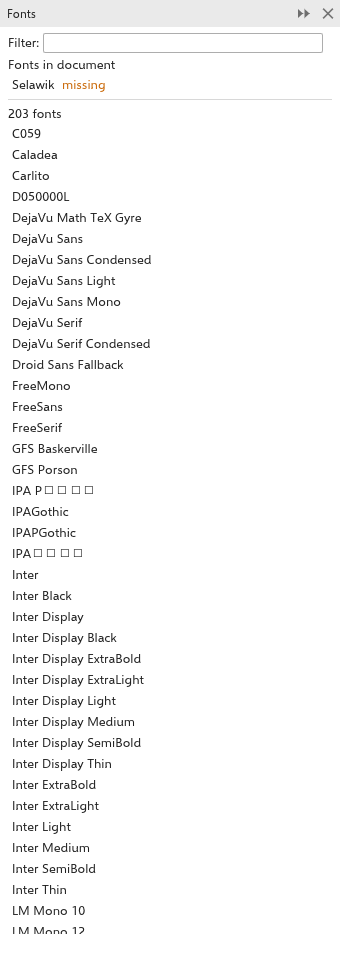
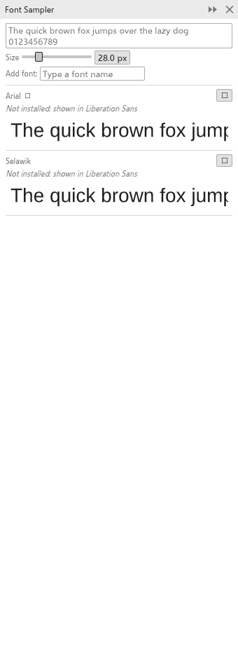
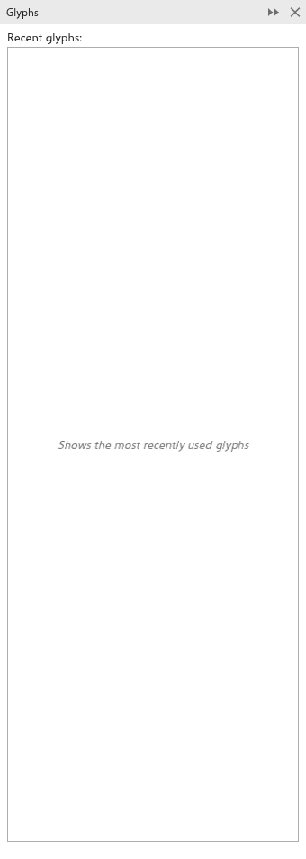

此頁面尚未翻譯，以英文顯示。
Fonts and glyphs
TraceDraw uses the fonts installed on your computer, fonts you add in the Font Manager, and fonts that come with a drawing. This page explains the panels and the dialog box for working with fonts and special characters.
The Fonts panel
The Fonts panel lists the font families.

- Type in the filter field to narrow the list.
- Under Fonts in document are the families the drawing uses. A family that is not installed is marked missing; its text shows in a similar font and keeps its font name. A family that came with the drawing is marked embedded.
- Click a family to give it to the selected text, or to make it the font of new text.
Missing fonts
When a drawing uses fonts that are not installed, a message names them after it opens (see Notes after opening). Install the fonts and the text shows in them again. Drawings saved as .tdraw, and .cdr files with embedded fonts, can carry their fonts along.
The Font Sampler
The Font Sampler panel (Text > Font Sampler) shows a line of sample text in several fonts, one under the other, to compare them.

- Type the sample text at the top; left empty, a sentence in your interface language is used.
- Set the size (10 to 96, 28 at first).
- Add fonts by typing part of a name and clicking one of the matches (up to 24 fonts); the cross removes one. At first the panel lists the text font and the fonts of the drawing.
- Click a sample to give that font to the selected text.
The Glyphs panel
The Glyphs panel (Text > Glyphs, Ctrl+F11) shows every character of a font, to insert symbols and special characters.

- Choose the font.
- Choose a character range: the entire font, Basic Latin, Latin-1 Supplement, Latin Extended, Greek, Cyrillic, Hebrew, Arabic, punctuation, numbers, currency, arrows, mathematical operators or symbols.
- Click a character. It is inserted at the caret of the text you are editing, or as a new text in the middle of the page.
Hover a character to see its name and code. A small arrow under a character means the font has alternates for it (such as swashes or small capitals); click it to see them. The glyphs you used last are at the top of the panel.
Type in the search field above the grid to find characters: type the characters themselves (such as é), or a Unicode code point such as U+20AC, 0x20ac or 20AC. The line above the grid shows the code point, the character and the range of the character under the pointer.
The Font Manager
Tools > Font Manager opens the Font Manager, a window that organizes your fonts.

- Libraries (top left): My fonts (the installed fonts), the folders you added, Favorites and your collections. Double-click a collection to rename it; right-click for more.
- Filters (bottom left): by status (installed, not installed, protected system fonts, duplicates), embedding rights, technology (TrueType, OpenType, variable), weight, width, style, character range and OpenType features. Clear removes them.
- Right side: the sample text and its presets, a search field (family, style or PostScript name), and the fonts as cards, grouped by family. Each card shows a sample, the technology and a bar that is green when the font is installed. Click to pick a font, Ctrl+click to pick several.
To use the Font Manager:
- Add folder scans a folder for font files (TTF, OTF, TTC, OTC); its fonts show as not installed. Add font installs one file at once.
- Install makes the picked fonts available in TraceDraw, now and at every start. Uninstall removes them; the system's own fonts are protected.
- Add to collection and Remove from collection organize fonts; drag fonts onto Favorites or a collection to add them.
- Double-click an installed font, or choose Use in drawing, to give it to the selected text.
- Show details shows the family, style, version, file, technology, embedding rights, weight, width, glyph count, scripts and features of the font you clicked.
Fonts the drawing uses that are not installed are listed in orange above the cards. In the browser version, Add font loads a font file for the session only.